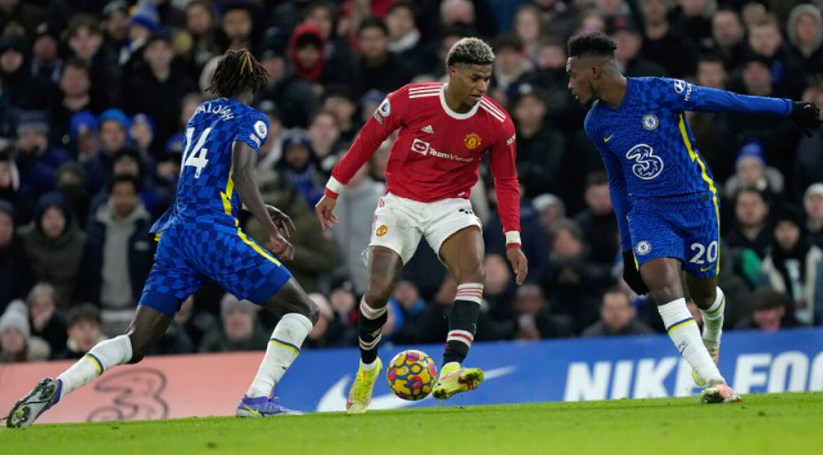

Thứ Năm, ngày 25/05/2023 13:23 PM (GMT+7)
Vào lúc 2h rạng sáng mai, 26/5, MU sẽ tiếp Chelsea trên sân nhà Old Trafford trong khuôn khổ đá bù vòng 32 Ngoại hạng Anh. Đây là trận đấu “Quỷ đỏ” cần ít nhất 1 điểm để chắc chắn kết thúc mùa giải trong top 4, và nếu chiến thắng họ vượt Newcastle để leo lên top 3. Trong buổi họp báo trước trận đấu, HLV Erik Ten Hag tiết lộ thông tin nhân sự của đội chủ sân Old Trafford. Theo nhà cầm quân người Hà Lan, Rashford nhiều khả năng đá chính ở trận cầu quan trọng này.
Khi được hỏi về khả năng đá chính của Rashford, HLV Ten Hag cho hay: “Có vẻ là như vậy. Hôm qua, cậu ấy đã tập luyện trở lại, và trông khá sung sức. Tuy nhiên, tôi phải xem lại kết quả buổi tập như thế nào, đánh giá của đội ngũ y tế về khả năng ra sân của cậu ấy ra sao trước khi đi đến kết luận cuối cùng. Rashford có ra sân hay không, ngày mai chúng ta sẽ rõ".
Rashford sẽ cùng với các nhân tố trên hàng công như Martial, Antony và Bruno Fernandes hướng đến mục tiêu ghi bàn. Về cơ bản, ngoại trừ Lisandro Martinez chấn thương nặng nghỉ hết mùa từ lâu, HLV Ten Hag có những nhân sự đã chơi một cách quen thuộc trong những tuần trở lại đây. Tờ báo Anh dẫn một nguồn tin nội bộ của “Quỷ đỏ” cho hay, HLV Ten Hag chỉ thay Sancho bằng Rashford, 10 vị trí còn lại giống hệt trận thắng Bournemouth cuối tuần trước. Nhưng nhân sự của Chelsea mới thực sự khó đoán. Đơn giản vì trong tay HLV Frank Lampard có quá nhiều chất liệu mà đôi khi “Super Frankie” cũng không biết làm gì với nguồn nhân sự dồi dào đến thế.
Theo London Evening Standard, dù đã thiếu vắng đến 9 cầu thủ vì chấn thương, lực lượng Chelsea vẫn rất đáng gờm trên lý thuyết. Nguồn tin kể trên cho hay, đội bóng Tây London sẽ bước ra thảm cỏ Old Trafford với đội hình giống hệt trận thua Man City 0-1 cách đây vài ngày tại Etihad, toàn bộ 11 vị trí là không đổi. Trong đó, Sterling và Havertz tiếp tục là điểm nhấn nơi hàng công “The Blues”. Ở chuyến làm khách thứ hai đến Manchester trong vòng ít ngày, HLV Lampard đang rất muốn gieo sầu ngay tại nơi được mệnh danh là “hang Quỷ”.